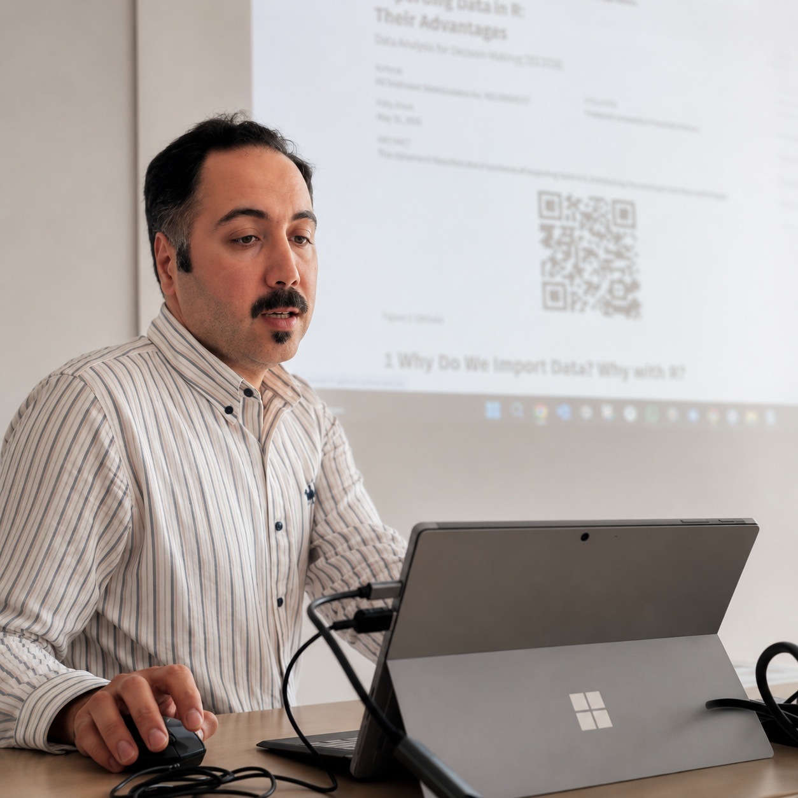

PROCUREMENT • SUPPLY CHAIN • PROJECT COORDINATION
Helping industrial organizations optimize procurement, develop supplier networks, improve commercial performance, and successfully deliver EPC and manufacturing projects.

Years Experience
Procurement Portfolio
International Suppliers
National Industrial Projects
Procurement Cost Reduction
Process Optimization
I am a Procurement & Supply Chain Specialist with more than ten years of professional experience in EPC, industrial manufacturing, and process automation projects. Throughout my career, I have managed strategic sourcing, supplier qualification, commercial negotiations, procurement planning, and cross-functional collaboration with engineering, manufacturing, logistics, and executive teams.
My academic background in Chemical Engineering enables me to understand technical specifications while communicating effectively with commercial stakeholders. This combination has strengthened technical bid evaluations, supplier selection, contract negotiations, and procurement decision-making throughout complex industrial projects.
Currently, I am pursuing an M.A. in International Management at Hochschule Fresenius in Cologne, Germany, while seeking opportunities to contribute to internationally operating industrial companies in procurement, supply chain management, project coordination, and commercial operations.
Cologne, Germany
M.A. International Management (Ongoing)
M.Sc. Chemical Engineering
EPC • Manufacturing • Oil & Gas • Automation
Supported procurement and coordination for the design, manufacturing, assembly and supply of industrial control panels, MCCs, PLC panels and electrical cabinets.
Procurement of PLC, DCS, SCADA, instrumentation, process automation equipment and electrical components from international suppliers.
Commercial procurement, supplier evaluation, tender management and coordination throughout EPC project lifecycles.
Negotiated with more than 30 international suppliers across Europe and Asia for industrial equipment, engineering services and automation systems.
Coordinated industrial visits, technical meetings, seminars and commercial activities for German industrial partners entering the Iranian market.
Bridged engineering and commercial teams by evaluating technical specifications, supplier capability and commercial proposals.
M.A. International Management
2026 – Present
M.Sc. Chemical Engineering
2015 – 2018
B.Sc. Chemical Engineering
Email: your-email@example.com
Location: Cologne, Germany
LinkedIn: linkedin.com/in/alisoleimani71
GitHub: github.com/alisoleimani71